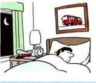

Alex is a bus driver, but now he is in bed asleep.
He is not driving a bus. (He is asleep.) but He drives a bus. (He is a bus driver.) Drive(s)/work(s)/do(es) etc. is the present simple:
I/we/you/they
drive/work/do etc
he/she/it
drives/works/does etc
B We use the present simple to talk about things in general. We are not thinking only about now. We
use it to say that something happens all the time or repeatedly, or that something is true in general. It is not
important whether the action is happening at the time of speaking:
+ Nurses took after patients in hospitals.
+ I usually go away at weekends.
+ The earth goes round the sun.
Remember that we say: he/she/it -s. Don't forget the s:
I work ... but He works ... They teach ... but My sister teaches ...
For spelling (-s or -es), see Appendix 6.
C We use do/does to make questions and negative sentences:
do
drive/work/do etc
work?/come?/do?
does
he/she/it
work?/come?/do?
I/we/you/they
don't
work/come/do
he/she/it
doesn't
work/come/do
+ I come from Canada. Where do you come from?
+ 'Would you like a cigarette?' 'No, thanks. I don't smoke.'
+ What does this word mean? (not 'What means this word?')
+ Rice doesn't grow in cold climates.
In the following examples do is also the main verb:
+ 'What do you do?' (= What's your job?) 'I work in a shop.'
+ He's so lazy. He doesn't do anything to help me. (not 'He doesn't anything')
D I promise/ I apologise etc
Sometimes we do things by saying something. For example, when you promise to do something, you can
say 'I promise ...'; when you suggest something, you can say I suggest ...'. We use the present simple
(promise/suggest etc.) in sentences like this:
+ I promise I won't be late. (not 'I'm promising')
+ 'What do you suggest I do?' 'I suggest that you ...'
In the same way we say: I apologise .../I advise .../I insist .../I agree ... /I refuse ... etc.